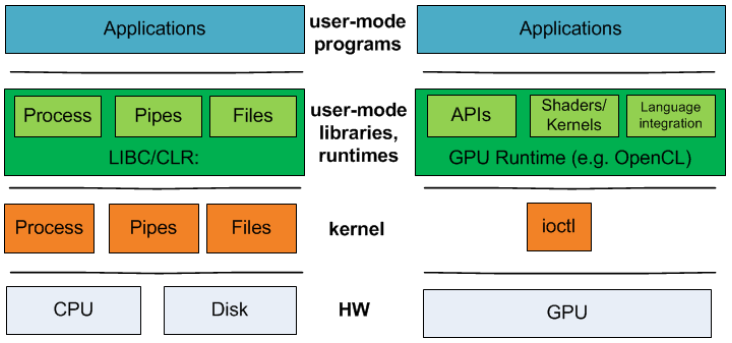

How perf-simulator to support mesa stack
This is a simple example that used to explain the relationship between UMD and KMD

User mode
#include <stdio.h>
#include <fcntl.h>
#include <unistd.h>
#define CHR_DEV_NAME "/dev/chr_dev"
int main(int argc, char** argv) {
int ret = 0;
char buf[100] = {0};
char from_kernel_msg[] = "oooo, i come in.";
int fd = open(CHR_DEV_NAME, O_RDWR | O_NONBLOCK);
if (fd < 0){
printf("open file %s failed!\n", CHR_DEV_NAME);
return -1;
}
read(fd, buf, sizeof(buf)); // read from kernel
printf("buf = %s\n", buf);
write(fd, from_kernel_msg, sizeof(from_kernel_msg)); //write to kernel
close(fd);
return 0;
}
Kernel mode
#include <linux/module.h>
#include <linux/kernel.h>
#include <linux/fs.h>
#include <linux/cdev.h>
#include <linux/uaccess.h>
#include <linux/device.h>
static struct cdev chr_dev; //define a char device
static dev_t ndev; //char device node's device number
struct file_operations chr_ops = {
.owner = THIS_MODULE,
.open = chr_open,
.read = chr_read,
.write = chr_write,
};
static int chr_open(struct inode *nd, struct file *file){
int major = MAJOR(nd->i_rdev);
int minor = MINOR(nd->i_rdev);
printk("chr_open, major=%d, minor=%d\n", major, minor);
return 0;
}
static ssize_t chr_read(struct file *fl, char __user *u, size_t sz, loff_t *off){
printk("In the chr_read() function!\n");
if (copy_to_user(u, "I am from kernel driver.\n", 26)){
printk("copy_to_user maybe happened fault!\n");
return -EINVAL;
}
return 0;
}
static ssize_t chr_write(struct file *fl, const char __user *u, size_t sz, loff_t *off){
char buf[130] = {0};
printk("In the chr_write() function!\n");
if (copy_from_user(buf, u, sz)){
printk("copy_from_user maybe happened fault!\n");
return -EINVAL;
}
printk("\"%s\" am from user space\n ",buf);
return 0;
}
static int demo_init(void){
int ret = 0;
cdev_init(&chr_dev, &chr_ops); //initial char device object
if ((ret = alloc_chrdev_region(&ndev, 0, 1, "chr_dev")) < 0){ //alloc device number
return ret;
}
printk("demo_init() : major=%d, minor=%d\n", MAJOR(ndev), MINOR(ndev));
if ((ret = cdev_add(&chr_dev, ndev, 1)) <0){ //register char device into system
return ret;
}
return 0;
}
static void demo_exit(void){
printk("Removing chr_dev module...\n");
cdev_del(&chr_dev); //del char device from system
unregister_chrdev_region(ndev, 1); //release device number
}
module_init(demo_init);
module_exit(demo_exit);
MODULE_LICENSE("GPL");
MODULE_AUTHOR("GGang.liu@LinuxFGL");
MODULE_DESCRIPTION("A char device driver as an example");
How to build .ko file
obj-m := demo_chr_dev.o
KERNELDIR := /lib/modules/$(shell uname -r)/build
PWD := $(shell pwd)
default:
$(MAKE) -C $(KERNELDIR) M=$(PWD) modules
clean:
rm -f *.o *.ko *.mod.c
How to hijack file operation in UMD
Linux Graphics Stack:

libmvpdrm
This lib is a self-definition library which depend on libdrm
libmvpdrm = static_library(
'mvpdrm',
'mvp_drm_winsys.c',
include_directories : [inc_include, inc_src, inc_mapi, inc_mesa, inc_gallium, inc_gallium_aux, inc_gallium_drivers],
dependencies : [dep_libdrm, dep_libmvpcommon, idep_nir_headers,idep_mesautil],
gnu_symbol_visibility : 'hidden',
)
Key function drmIoctl in /usr/local/include/xf86drm.h
extern int drmIoctl(int fd, unsigned long request, void *arg);
libdrm
drm_public int drmIoctl(int fd, unsigned long request, void *arg)
{
int ret;
do {
ret = ioctl(fd, request, arg);
} while (ret == -1 && (errno == EINTR || errno == EAGAIN));
return ret;
}
The real implementation of icube driver in KMD which will be compiled as kernel object file
/home/icube/kmd/src/icube_drv.c
static int __init icube_drv_init(void)
{
return pci_register_driver(&icube_pci_driver);
}
static void __exit icube_drv_exit(void)
{
pci_unregister_driver(&icube_pci_driver);
}
module_init(icube_drv_init);
module_exit(icube_drv_exit);
MODULE_AUTHOR(DRIVER_AUTHOR);
MODULE_DESCRIPTION(DRIVER_DESC);
MODULE_LICENSE("GPL and additional rights");
static struct pci_driver icube_pci_driver = {
.name = DRIVER_NAME,
.id_table = icube_pciidlist,
.probe = icube_pci_probe,
.remove = icube_pci_remove,
.shutdown = icube_pci_shutdown,
.driver = {
.name = "icubegpu",
#ifdef CONFIG_PM
.pm = &icube_pm_ops,
#endif
},
};
struct drm_driver icube_drm_driver = {
.driver_features = DRIVER_RENDER | DRIVER_GEM | DRIVER_SYNCOBJ | DRIVER_MODESET | DRIVER_ATOMIC,
.name = DRIVER_NAME,
.desc = DRIVER_DESC,
.date = DRIVER_DATE,
.major = DRIVER_MAJOR,
.minor = DRIVER_MINOR,
.patchlevel = DRIVER_PATCHLEVEL,
.open = icube_drm_open,
.postclose = icube_drm_postclose,
.release = icube_drm_release,
.ioctls = icube_drm_ioctls,
.num_ioctls = ARRAY_SIZE(icube_drm_ioctls),
.fops = &icube_drm_fops,
.prime_handle_to_fd = drm_gem_prime_handle_to_fd,
.prime_fd_to_handle = drm_gem_prime_fd_to_handle,
.dumb_create = icube_gem_dumb_create,
.dumb_map_offset = icube_gem_mmap_offset,
.dumb_destroy = drm_gem_dumb_destroy,
.gem_prime_import_sg_table = icube_gem_prime_import_sg_table,
.gem_prime_mmap = icube_gem_prime_mmap,
};
Solution
Based on current flow:
flowchart LR
libmvpdrm -- default --> libdrm.so --> icube_pci_driver
libmvpdrm -- perf-sim --> fake_libdrm.so:::someclass --> perf-simulator
classDef someclass fill:#f96
So here we can implement a self-defined libdrm to instead of standard libdrm. And still using the way of changing LD_LIBRARY_PATH env variable to active the self-defined fake_libdrm.so.
/etc/ld.so.conf
Question
Here is a question, which type library is using now? If dynamic library is used, it’s fine. Otherwise, we should consider to use dynamic library rather than static library.
/usr/lib/x86_64-linux-gnu/libdrm.a
/usr/local/lib/x86_64-linux-gnu/libdrm.so

Reference
Creating a shared and static library with the Meson build system